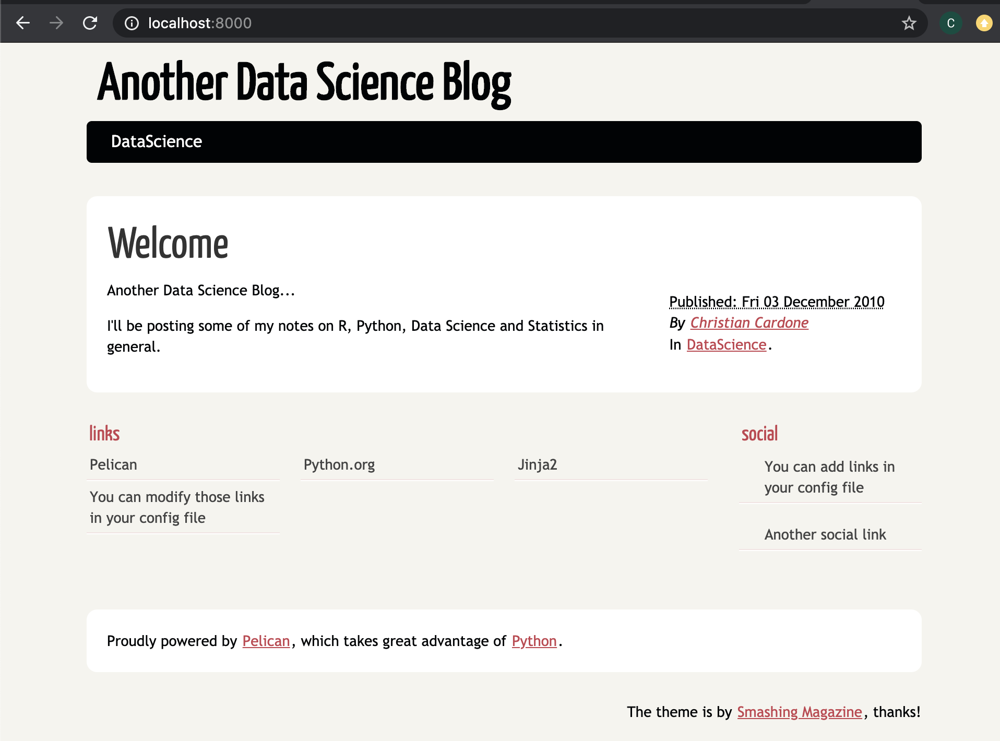

How I did this blog with Python (and Pelican)
Posted on Thu 29 October 2020 in Python
I'm going to show you how I created this blog using Python with zero to null knowledge of front end scripting languages.
First of all, this blog is "static", which means that there is no live database behind it -making it very easy to maintain!
I'm using pelican, a python library that generates static output in the form of ready to read html files that you can explore with your preferred web browser. This library makes things very simple for the average python user, integrating handy plugins and themes that allow users te personalize their websites (I will discuss few of them in the following sections).
Getting Started
Install pelican
pip install pelican
Install markdown support, if you want to write your posts using markdown, otherwise is not needed (but you need to write them using a reStructeredText '.rst' format)
pip install markdown
I'm using Python 3.8.2 with pelican 4.5.0 and markdown 3.3.3
Set up
The easiest way to set up (1st timers) is to run the quick start tool that will create a basic layout/structure. The default values are either contained within [ ] or in caps (y/N), leaving the default values should work just fine.
pelican-quickstart christian.cardone@ts-mac-02 blog % pelican-quickstart Welcome to pelican-quickstart v4.5.0.
This script will help you create a new Pelican-based website.
Please answer the following questions so this script can generate the files needed by Pelican.
Where do you want to create your new web site? [.]
What will be the title of this web site? Another Data Science Blog
Who will be the author of this web site? Christian Cardone
What will be the default language of this web site? [en]
Do you want to specify a URL prefix? e.g., https://example.com (Y/n) n
Do you want to enable article pagination? (Y/n) n
What is your time zone? [Europe/Paris] Europe/London
Do you want to generate a tasks.py/Makefile to automate generation and publishing? (Y/n) Y
Do you want to upload your website using FTP? (y/N)
Do you want to upload your website using SSH? (y/N)
Do you want to upload your website using Dropbox? (y/N)
Do you want to upload your website using S3? (y/N)
Do you want to upload your website using Rackspace Cloud Files? (y/N)
Do you want to upload your website using GitHub Pages? (y/N)
Done. Your new project is available at /Users/christian.cardone/Projects/Research/blog
Once the set up is over, you should have a directory containing the following structure:
.
|-content
|-Makefile
|-output
|-pelicanconf.py
|-publishconf.py
|-tasks.py
The content and output folders would be empty.
Adding Content
Now you can start writing content under the "content" directory. I added my first post as an md file (but feel free to use rst) and named it "test.md"
Title: Welcome
Date: 2010-12-03 10:20
Category: DataScience
------------------------
Another Data Science Blog...
Generate site
To generate the content make sure you are placed on the main directory and run:
pelican content Done: Processed 1 article, 0 drafts, 0 pages, 0 hidden pages and 0 draft pages in 0.13 seconds.
Now you will have content generated in the output folder, the new structure should look like this:
.
|-content
|-test.md
|-Makefile
|-output
|-archives.html
|-author
|-authors.html
|-categories.html
|-category
|-index.html
|-tags.html
|-theme
|-welcome.html
|-pelicanconf.py
|-publishconf.py
|-tasks.py
Note that the content welcome.html has been created including what I wrote in my test.md file.
Preview Site
To preview the content of the site, go back to the console and run:
-
Using pelican Go to the output path and execute
cd ~ /Users/christian.cardone/Projects/Research/blog/output
python -m pelican.server -
Using development server Go to the project directory and run:
cd ~ /Users/christian.cardone/Projects/Research/blog
make devserver
Once is done, the preview of the site will be hosted in http://localhost:8000/ in your browser. And should look similar to this:

For more info regarding pelican take a look at their documentation https://docs.getpelican.com/en/stable/
Adding content from a Jupyter Notebook
To generate content from an ipynb file, its needed to install and configure a plugin. As of the time this article was written the pelican-plugins repository is under a re-structure and consolidation process, so there are certain plugins that are easy to install than others at this point. We will use the plugin pelican-jupyter formerly known as pelican-ipynb. Depending on the status of the migration of this plugin there could be different ways to install it, I will cover the most likely ones but also will cover a hard manual installation if needed.
1.Install just the pelican-jupyter plugin:
pip install pelican-jupyter
2.Check if the plugin was installed following the new plugins structure or not. In the console run:
pelican-plugins
2.1 If migrated. You will see as output in the console:
-> Plugins found:
| pelican.plugins.pelican_jupyter
If you could see the above, then simply add to your pelicanconf.py:
PLUGINS = ['pelican.plugins.pelican_jupyter.markup'] # The plugin
MARKUP = ('md', 'ipynb') #Letting pelican know what extensions to take
IGNORE_FILES = [".ipynb_checkpoints"] #Ignoring checkpoints from your jupyter notebooks
2.2 If not migrated, then you would see something like the below after running 2.
-> No plugins are installed
It means that the plugin wasn't installed as a submodule of pelican and instead was installed as an independent library, then a simple solution is to add the following to your pelicanconf.py:
from pelican_jupyter import markup as nb_markup
PLUGINS = [nb_markup] # The plugin module
MARKUP = ('md', 'ipynb') # Letting pelican know what extensions to take
IGNORE_FILES = [".ipynb_checkpoints"] # Ignoring checkpoints from your jupyter notebooks
3.The hard way. If none of the above work, clone the legacy repo of plugins:
git clone --recursive https://github.com/getpelican/pelican-plugins
Then specify in your pelicanconf.py the path of the plugin pelican-ipynb and the name of the submodule to be used markup. Note that we specify the full path to the plugin since what we need to use its a submodule of the plugin. If you are using multiple plugins I suggest to use one of the above solutions instead.
PLUGIN_PATHS = ['path/to/pelican-plugins/pelican-ipynb']
PLUGINS = ['markup']
Article metadata
There are two ways to pass the metadata; by a separate permeable file or by including it in the Jupyter notebook.
1.Separate file (.nbdata)
Create a file with the exact name as your Jupyter notebook (in the same folder) an add the extension .nbdata, inside pass the metadata as:
Title:
Date:
Category:
Tags:
Author:
It's important to leave an empty line in the bottom of the file.
2.Within Jupyter You can add the metadata in the 1st cell of the notebook. In a markdown cell write:
- title: My notebook
- author: Christian Cardone
- date: 2020-12-28
- category: pyhton
- tags: website
Note that the metadata parameters are specified with a hyphen ("-"), in lower letters ("ab"), and there is an space after each colon (": ").
If you chose the option 2, then you will need to add an additional parameter to your pelicanconf.py file:
IPYNB_MARKUP_USE_FIRST_CELL = True
Note:
1. The nb extension and the name of the parameter IPYNB_MARKUP_USE_FIRST_CELL replaced a previous convention. In case you have an old version or the contribuitors decide to change it again, you can see what is the valid convention in the repo website or in the markup.py file.
2. There are some issues with some pelican-themes CSS and jupyter notebooks, which make the outputs look bad. I suggest to check the recommendations on how to solve this issues directly from the repo, but usually including the following in pelicanconf.py solves it:
IPYNB_SKIP_CSS = True
Customisation
You can easily change the theme of your site by downloading it from pelican-themes repo, you can see a preview of all them in http://www.pelicanthemes.com/. I personally like the Flex theme (repo here), without trying to promote it, I like it because of its useful integrations and features (including dark mode!).
Once you have selected a theme, you can set it up by changing the pelicanconfig.py file. Simply add a line including the path where you stored the theme.
# Theme
THEME = '/Users/christian.cardone/pelican-themes/Flex/'
Changing colours (css)
Depending on the theme you have selected you can either create a custom.css or modify directly the stylesheets.
If the theme allows custom CSS stylesheets you can add to the pelicanconf.py something like this:
EXTRA_PATH_METADATA = {
'extra/custom.css': {'path': 'static/custom.css'},
}
CUSTOM_CSS = 'static/custom.css'
Otherwise simply identify the stylesheets in your local theme repo and change the css files accordingly. For example for Flex the stylesheets can be found on:
/Users/christian.cardone/pelican-themes/Flex/
|-static
|-stylesheet
|-dark-theme.min.css
|-style.min.css
These files are for the dark and light themes respectively. You can also change there the font type and size if you desire.
Adding Google Analytics
I will assume you have already a Google analytics account, if not please refer to the google analytics How to get started documentation.
As of the time this article was written there were two different types of google analytics; google analytics and google analytics 4 (next generation). Hence different pelican themes have different integrations of them, if you are not sure what type of account do you have, or what type of analytics integration was included in your "pelican-theme" just simple check if the configuration requires a "UA-XXXX" ID or a "G-XXXX" ID, the former for google analytics (old) and the latest for the next generation analytics (GA 4).
Flex users have both integrations, for the 'old' GA simply add the following in your pelicanconf.py:
GOOGLE_ANALYTICS = 'UA-XXXX'
GOOGLE_TAG_MANAGER = 'GTM-XXXX'
Replacing UA-XXXX with your Universal Analytics property ID and GTM-XXXX with your Google Tag Manager ID
To set up Google Analytics 4 add the following instead:
GOOGLE_GLOBAL_SITE_TAG = 'G-XXXX'
Replacing G-XXXX with your actual Tracking Id.
If your pelican-theme does not have a GA integration
You can add the GA snippet to your pages automatically by modifying the script that generates the content.
First identify the base.html file (example from Flex):
Flex
|-templates
|-base.html
|-...
Then add your Google Analytics/Google Analytics 4 snippet, something like (example for GA 4):
{% if GOOGLE_GLOBAL_SITE_TAG %}
<!-- Global site tag (gtag.js) - Google Analytics -->
<script async src="https://www.googletagmanager.com/gtag/js?id={{ GOOGLE_GLOBAL_SITE_TAG }}"></script>
<script>
window.dataLayer = window.dataLayer || [];
function gtag(){dataLayer.push(arguments);}
gtag('js', new Date());
gtag('config', '{{ GOOGLE_GLOBAL_SITE_TAG }}');
</script>
<!-- End of Global site tag (gtag.js) - Google Analytics -->
{% endif %}
The above will allow you to add the snippet to all your outputs automatically. Once you have modified the base.html, you can generate your content and validate that your html outputs include the snippet.
Now you can push your changes and check in your google analytics account that you are receiving data. Note that it takes time for GA to build up a report so it's recommended to check the real time data to see if your installation is working properly.